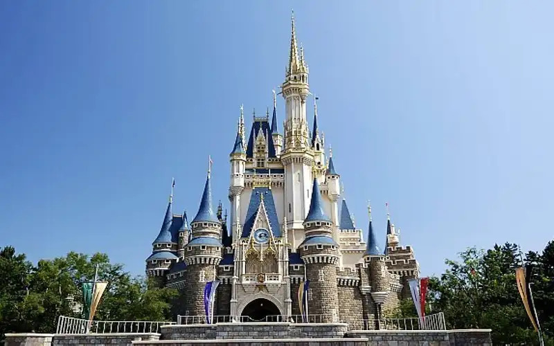

TOKYO DISNEYLAND
Wisata Jepang yang mungkin menjadi incaran Si Kecil adalah Tokyo Disneyland.Menyediakan beragam wahana permainan seru yang menantang adrenalin dengan konsep Disney.Tempat wisata Jepang yang terkenal ini sudah berdiri sejak tahun 1983, lho.
Diketahui, konsep wahana di tempat ini mencontoh Disneyland di California dan Magic Kingdom di Florida. Selain atraksi permainan yang seru, daya tarik dari tempat wisata yang terkenal di Jepang ini, yakni parade musiman setiap jam tertentu.